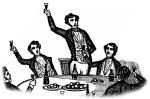

Steve Perry walked into the darkened bedroom. Sue-Lynn was already asleep, her long blonde hair splayed across both of their pillows. He knelt beside her and leaned in to plant a soft kiss on the back of her neck. Sue-Lynn moaned softly and rolled over. She opened her eyes and smiled. Wordlessly, she lifted herself up from the bed and kissed Steve, her lips dry but soft against Steve’s own.
After a moment, she lay back down on the pillow, looking up at him with those big blue eyes that had first drawn Steve to her. “How was the show?” she asked groggily.
“It was great,” Steve replied, grinning. It had been pretty kickass, actually. He was the drummer for Alien Project, and that night a bigshot manager had come to the show. Herbie Herbert managed a band called Journey, and he’d liked what he heard enough to invite Steve to send in a demo tape.
“That’s terrific, Stevie,” Sue-Lynn said when Steve told her about what had happened. “See? It’s like I told you, you’re gonna make it to the big time someday.”
Steve laughed and hugged Sue-Lynn tightly. “Sure, baby,” he said, “and when I do, you’re coming with me.”
He pulled away from her then. “Shit, I almost forgot,” he said, and pulled the arm of his t-shirt up over his shoulder. “Check out my new tattoo. I got it done this afternoon before the show.”
Sue-Lynn sat up and brushed a finger along his shoulder, where the new tattoo gleamed. “Roses!” she exclaimed. “Roses are my favorite flower!”
“I know,” Steve said. “Every time I look at it, I’ll think of you. These are better than real roses, Sue-Lynn — they never fade.” He kissed her then, and later, as they made love, she whispered in his ear.
“Roses never fade….”
Steve awoke with a start, Sue-Lynn’s name still on his lips. He instinctively felt around himself on the bed. He was alone.
He sighed deeply and reached for the bottle of Perrier on the bedstand. He had dreamed about her again.
Steve flicked on a light and glanced around at his luxuriously, if anonymously, appointed hotel suite. It was always the same room, it seemed; the same hotel. The cities changed but the hotels never did. Looking at the beige walls, he felt a twinge of intense loneliness twist through his stomach.
Should he head downstairs? There would be groupies waiting in the lobby, even at this late hour, hoping for a glimpse of their idol — or more than a glimpse.
No…not tonight. Steve stood up and stretched his limbs, still a bit achy from the previous night’s show. He padded to the window, his feet sinking into the deep plush carpeting, and looked out at the night skyline of Los Angeles.
Lemoore was only a few hours’ drive from here, Steve thought. He wondered if Sue-Lynn still lived there. A couple of years ago he’d run into a mutual friend, who’d told him she was still in Lemoore, living with her mother.
Broken hearts can always mend, he had told her, the day he had dropped the bomb. But did they? He wasn’t so sure anymore. His own heart was still ticking away, to be sure, but it hadn’t been the same since Sue-Lynn.
Roses never fade…
Steve turned from the window and went to the bedstand. He picked up the phone and called for his car.
Four hours later, as the sun rose above the coastal mountains, he found himself driving past Lemoore’s city limits.
Lemoore hadn’t changed much since his last visit, years ago. Towns like Lemoore never changed much. A Target or Starbucks might find its way into what passed for Lemoore’s downtown district, but things mostly stayed the same. Without being quite aware of it, Steve drove down the main drag, toward the apartment he’d shared with Sue-Lynn.
He’d ridden out of town in a rusted-out Harley, and was driving back in a silver Porsche. Things in Lemoore may not change much, Steve mused, but things from Lemoore sure changed a lot once they left.
Steve looked up at his old apartment building, a two-story that had been crumbling even when he’d lived in it. He knew Sue-Lynn wouldn’t be there, but he wanted to see it anyway.
Around the corner from the apartment was the Lemoore Cafe, where he and Sue-Lynn had gone on weekends, if one of them had been working and had some extra cash. Steve wondered if it was still there.
It was, but it had closed down along with all the other shops on the block, quite a while ago it seemed, judging from the advanced state of decay. He wondered if he and Sue-Lynn had been the cafe’s last customers, the day he’d left town.
“Come with me,” he said.
“You know I can’t do that,” Sue-Lynn replied, sipping her coffee and then setting it down with a sharp clatter on the saucer. “I’ve gotta stay with my mom, she’s still really sick.”
“All right, then,” Steve said. “I’ll go on ahead to L.A. and see how this gig turns out. If they still want me after a few weeks, I’ll come back and get you. Both of you.”
Sue-Lynn smiled; it was the saddest thing Steve had ever seen. “Whatever you say, Stevie,” she said finally, but there was neither hope nor expectation in her voice.
Steve walked up the street from the cafe. It was funny how the old neighborhood hadn’t changed, yet it still felt unfamiliar to him. He couldn’t remember now how to get to the post office or the grocery store, though if he’d been blindfolded he could probably find his way there by instinct alone.
He passed by a flower shop and thought of roses. He ducked inside. The owner turned out to be a girl he’d gone to high school with, Katey Hamilton. She of course recognized him at once, and they greeted each other warmly.
After a few minutes of catching up, Steve asked if Katey knew where Sue-Lynn was. He hoped he had done so with enough nonchalance.
Katey’s eyebrow lifted enigmatically. “Why?” she asked. “Are you thinking of looking her up?”
“Should I not?” Steve said.
Katey was silent for a moment. Then she said, “Sue-Lynn’s married now, did you know that?”
“No, I didn’t.”
“Yeah. She ended up with Kyle Morrison, if you can believe that. Remember old Kyle?”
He did remember Kyle. Kyle had been a jock in high school, a football player. He and Steve hadn’t had much to do with each other, since Steve had no interest in sports and wasn’t runty or nerdy enough to become a receptacle for excess jock aggression. He’d figured Kyle would have gotten out of Lemoore on a scholarship or something.
“Well…that’s great,” he said lamely.
“Yeah, I guess,” Katey said.
“Hey,” Steve said abruptly, “is Sue-Lynn okay? I mean, is she happy?”
Katey smiled, her expression unreadable. “Yeah, Steve,” she said, “she’s doing fine.”
They stood at the door of the Lemoore Cafe and kissed their farewells. Her tears rolled down onto Steve’s cheeks and left pink marks where they’d touched his skin.
He pulled away from her then, feeling like he was being stretched into a dozen different directions at once. He’d had no idea it would be so difficult.
“Okay baby,” he said, touching her face. “I’ll call you when I get to L.A.”
“Goodbye, Stevie.”
“No,” Steve said. “I don’t want to say goodbye. I’ll just…see you later, okay?”
Sue-Lynn smiled again, and the sight of it broke his heart. “Okay, Stevie, whatever you say. See you later.”
He swung onto his motorcycle and rode away, feeling her gaze piercing his back all the way to Los Angeles.
“You okay, Steve?”
Katey’s voice brought him out of his reverie. He smiled at her, or hoped he did. “Yeah….I’m okay.”
Steve pulled his wallet out of his hip pocket. “Listen, Katey,” he said, “I want to order some roses.”
“Okay.”
“Give her the best in the shop, okay?” Steve said.
“You know I will. Do you want to include a card?”
Steve hesitated a moment, thinking. “No,” he said finally. “Just…send her my love, okay?”
As Steve drove out of Lemoore, back to Los Angeles, his fingers sought out the place on his shoulder where his tattoo still lay.
Roses never fade….
He was just over the hills into the L.A. basin when the tears finally dried from his cheeks.
John Waite sat at the table in his dressing room, wiping sweat from his face with a cool, damp washcloth. In the distance, he could still hear the screams of his fans out in the arena. Another successful stop on his American tour. Another five thousand teenaged girls clutching his album to their chests as they drifted off to sleep tonight.
Where am I, anyway? John wondered idly as he pulled his sweat-soaked t-shirt over his head and tossed it into a corner. He had already forgotten which stop of the tour he was at. After a while they all blurred together. John could remember a time when every gig had seemed as precious as a diamond; thinking about those early days now made him sad in a way he could never express in one of his frothy pop singles.
Nostalgia, in turn, made him think of Cynthia. Where was she now? John wondered. Was she happy? He hoped so, despite everything that had happened between them, the harsh words that now seemed to be the only ones he could remember from their relationship.
A memory of Cynthia flooded John’s mind then, startling him with its vividness. It was their first meeting, after one of his small club shows in Lancaster, before the album had hit. She had caught John’s eye immediately, blonde hair spilling out over her headband, a glittery short purple dress that barely covered her thighs, lovely legs clad in silver tights and purple legwarmers. He had flashed his most charming smile and bought her a drink. Hoping merely to get lucky, by the end of the evening he was ready to propose marriage to her.
John poured himself another glass of Veuve Cliquot and slumped back in his chair, melancholy washing over him. Cynthia. Why couldn’t he get her out of his mind? Why couldn’t he move on? Certainly it wasn’t the lack of available female companionship; he’d already been propositioned by several female acquaintances who didn’t even know that he and Cynthia had split up — and of course there were always the groupies. John hadn’t been able to bring himself to take advantage of either, however, in the months since the breakup. The notion of intimacy with a woman — physical or emotional — only brought more painful thoughts of Cynthia.
He hadn’t heard from her in weeks, and John wondered what was going on in her life — if she had moved on and found someone new. He found it disturbing that people who were so inextricably — or so he had thought — intertwined could suddenly live such completely separate lives. Did she even think of him anymore? John wondered. Or had he already become irrelevant?
That thought made him angry, and it was never more than at those moments that he wished he could simply erase all memory of Cynthia from his mind and move on with his life. Why did she haunt him so? It wasn’t as if she were perfect for him; indeed, in many ways they were total opposites. Neither of them could explain their attraction to the other; it was simply something that had happened between them, like an explosive chemical reaction between two apparently harmless substances.
John looked at the telephone on the table in front of him. It would be so easy to pick up the phone now and dial her number, beg her to take him back. Only pride kept him from doing so — he could never allow Cynthia to know how much he missed her, how desperate he was to have her back in his life. And hadn’t Cynthia been the one to desert him in the first place? The part of him that was still angry was tired of chasing after her all the time. Forget that bitch, that dark part of him whispered. Find a girl who won’t throw you away like a used Kleenex as soon as she’s done with you.
It all made sense to John — Lord knew his friends thought so — and yet something within him still yearned to have Cynthia near him again, to hear her laughter and feel the bright light of her spirit warming his chilly British heart.
Before he realized what he was doing, John picked up the receiver and began to dial. He felt certain that he would get her answering machine anyway, this late on a Saturday night. It rang twice, and then someone picked up the phone.
“Hello?” It was Cynthia’s voice. John’s breath caught in his throat. What was he supposed to say? A moment ago he had known, but now he found himself tongue-tied. The confident swagger of his onstage persona was nowhere to be seen in the nervous, sweating idiot John saw in the mirror.
“Hello? Is anyone there?”
The sound of her voice poured into the empty vessel of John’s heart like cool wine into a dusty glass. His hand trembled on the receiver as he listened to her soft breathing from God knew how many thousands of miles away. He could not bring himself to speak, but from his heart he sent every unspoken word, everything he longed to tell her, down the telephone line, like a telegraph to her heart.
At last John opened his mouth to speak, but at that moment he heard the click as Cynthia hung up the phone. After a pause John set the receiver down and cradled his head in his hands.
A knock sounded at the door of his dressing room. “John!” It was his manager, Bernie. “Let’s hit the road, man — Cleveland awaits!”
“Be there in a second,” John called out. He wiped the cloth over his face one last time and then stood up, checking his look in the mirror. Get it together, man, he thought. Yes, losing Cynthia had sucked, but there was a whole world out there to conquer. Legions of screaming fans went a long way toward soothing one’s heartbreak.
Soon he would be in Cleveland, and after that a dozen other cities; soon Cynthia would be no more than a dim memory. John slipped into his white linen jacket and strode toward his dressing room door. He would be okay. If he tried hard enough, in fact, he could even convince himself that he didn’t even miss her at all.
“I ain’t missing you, babe,” John murmured as he opened the door. It sounded true even to himself.
Slattery burst into the Temporal Control Room and aimed his ion pistol at a spot just between the eyebrows of the Time Lord. “Sic semper tyrannis!” Slattery screamed as his finger tensed on the trigger.
“Wait!” the Time Lord cried, his hands raised in alarm. “Why are you doing this?”
“Isn’t it obvious?” Slattery snarled. “You keep our people in slavery, without control over our own lives!”
“What are you talking about?” the Time Lord protested. “All I do is enforce our law, which is that all citizens must spend 12 hours of each day in cryogenic suspension. We created this law because of rampant overpopulation. This way, half of our people enjoy the benefits of our society at any one time, thus making efficient use of valuable living space and resources!”
“Pfah!” Slattery spat. “Lovely words, Time Tyrant — and a convenient excuse to steal half of our lives — the half we spend rotting in those damned cryo tanks!”
“But your body is perfectly preserved while in the cryogenic storage capsule,” the Time Lord replied. “You don’t age at all in cryo sleep…so effectively, we’re actually doubling your lives by spreading your total life expectancy over twice the usual number of years.”
Slattery pondered this for a moment. “Oh…yeah, you’re right,” he mumbled, frowning. “I hadn’t thought of it that way before. Sorry — my bad.”
“Don’t worry about it, my good chap!” grinned the Time Lord, whose real name was Bill Evans.
Slattery stood on the roof of the burning building and raised his fist as he shouted to the night sky…”FREEDOM! FREEDOM FROM TYRANNY!”
On the street below, a crowd had gathered. A lone voice wafted up from the throng: “Why? What’s your beef?” The voice belonged to a shortish bespectacled man named Nelson O’Malley, who worked as an accountant in one of the top firms in their futuristic utopian society, but who had thus far failed to find a suitable mate, and so lived alone in a plasteel habitat tower with three cats and a sizable collection of holographic hermaphrodite porn.
“What’s my beef?” Slattery replied incredulously. “Do I have to spell it out to you people? We live in a–”
“I’m sorry, did you say ‘spell’ or ‘smell’?” asked a woman in the crowd. “It’s kind of hard to hear you since you’re seven floors up.”
“Spell!” Slattery cried. “Look, the point is, we live in a society in which the very act of child-rearing has been taken away from us! The government prohibits couples from raising their own children, and instead forces the children to grow up in special state-run institutions where they are locked away from all contact with society until adulthood!”
“Well yeah,” Nelson replied, “but the kids receive a top-notch education 24 hours a day from highly paid and well trained professionals, as well as a non-denominational program of moral and spiritual guidance which stresses cooperative approaches to problem-solving and a humane, respectful attitude towards other human beings. In addition, the kids are taught strict rules of proper public behavior, including intensive training in etiquette and sensitivity!”
The crowd murmured approvingly. “But our children are locked away from all contact with us!” Slattery insisted.
“Most of us actually don’t mind!” the woman responded. (Her name was Marjorie Klein.) “We can actually eat a meal in a restaurant or go to a movie without being serenaded by some squalling brat, and we never have to watch some woman breastfeeding her baby in the middle of a bookstore!”
“Plus,” Nelson added, “ever since sociological studies revealed that 75% of parents secretly wish they could dump their puking, shitting babies into the nearest dumpster, mandatory institutionalization of children has actually reduced infanticide and cases of so-called Sudden Infant Death Syndrome by nearly half!”
Slattery rubbed his chin thoughtfully. “Geez, I never really looked at it that way before.”
“Sheeyah,” rumbled the cop-bot as it rose up behind Slattery, “you should maybe have done that before you decided to torch this baby food factory.”
“Oh,” Slattery said, “I thought it was a government building or something. My bad.”
The cop-bot arrested Slattery, and he was found guilty and sentenced to two years in a minimum security prison by the Judge-o-Meter. Later, flying cars were invented.
Bunnies and fawns grazed peacefully in a verdant meadow. Suddenly there was a blinding flash of light! A hole appeared in mid-air, and a man stepped through. He brushed himself off as the hole sizzled to a close behind him, leaving only a faint whiff of ozone.
Slattery checked to make sure his satchel was still securely tightened. Inside were a thousand crisp dollar bills. It was the last of what had been an enormous fortune, nearly all of which had been spent researching and developing a working time machine. With this remaining thousand, though, he’d build a fortune that would dwarf even his former riches!
Slattery had gotten the idea after watching an episode of Little House on the Prairie, in which Half-Pint and Mary had bought an assload of candy at Oleson’s Mercantile for a mere penny. He remembered reading about how, back in the 1800′s, you could buy a steak dinner for something like a nickel, and a horse was maybe a hundred bucks. “Imagine if someone from today went back in time with a bunch of money,” Slattery thought to himself. “He could live like a king for what wouldn’t even buy a hamburger in today’s dollars!”
Five years and millions of dollars later, Slattery had invented his time machine, withdrawn the last of his cash — a thousand dollars — and stepped into the Chrono-Portal, which he had set to the year 1870.
Giddy with thoughts of the lavish lifestyle he’d lead in this primitive age, Slattery made his way to the nearest town, which was Rattlesnake Gulch. He made a beeline for the general store. Striding boldly up to the counter, he told the proprietor, “What is the most expensive item in your establishment, my fine man?”
“Why, that’d be this here solid gold outhouse commode,” the storekeep replied, gesturing to the solid gold outhouse commode behind the counter. “That’ll cost ye pretty dear, though.”
Slattery chuckled. “And how much would that be?” he asked, grinning.
“I reckon I could let ye have it for…” the storekeep calculated. “Five dollars?”
“Here ya go, my man!” Slattery proclaimed, and slapped five dollar bills onto the counter. “Wrap it up for me and I’ll throw in an extra fifty cents!”
The storekeep merely stared at him.
“What’s the matter, friend?” Slattery demanded. “Isn’t — er, ‘ain’t’ my money good here?”
“Why, if this is money, I’ll be a raccoon’s uncle!” the storekeep exclaimed, shoving the bills back across the counter. “Tryin’ ter pass off phony scratch is a hangin’ offense ’round these parts, hombre!” he added, ominously.
“Now see here–” Slattery began to protest, when a meaty hand clapped onto his shoulder.
“What’s all the ruckus?” the Sheriff demanded.
“NOOOOOOOOO!!!” Slattery wailed.
As you can probably tell, the story did not end well for Slattery. You see, he plumb forgot that 21st century currency bears no resemblance to currency of the 1870′s.
Miraculously, Slattery managed to escape the lynch mob and return to his own time, where he revised his plan. Unfortunately, when he attempted to secure some 19th century money, he realized that currency from that time was exceedingly rare and therefore just as pricey if not more so than if he were actually living in the 1800′s! Oh, and needless to say, all of his 21st century money was confiscated by the sheriff, so when he got back, all the 19th century money he could afford was like $5. “NOOOOOOOOO!!!” Dumbass.
Wallace Burwick, 34, Caucasian male, entered a Safeway supermarket looking for two cans of garbanzo beans and a gallon jug of drinking water. As he entered the “Canned Vegetables” aisle, he saw a middle-aged woman with poufy dark hair (indeterminate ethnicity) at the beans section, standing directly in front of the chickpeas.
Mildly annoyed at being stymied, Burwick hovered near the woman, pretending to study some canned green beans (French cut) and watching her out of the corner of his eye. She was hunched over her cart, rearranging items, pausing only to reach up and take another can of beans off the shelf. Burwick could see that they were cans of garbanzo beans. What! She was taking all the garbanzo beans! Her cart was full of them!
His annoyance ratcheting up to indignation, Burwick moved closer to the woman, eyeing the shelves to see how many cans were left. There were still almost a half dozen. “Excuse me,” he said, trying to move around the woman’s cart. But the woman wouldn’t budge, or acknowledge Burwick in any way! She just kept hooking can after can into her cart.
Outrageous! And what were even the chances that he’d come here, seeking garbanzo beans — which he rarely even ate — at the same time as another garbanzo-bean-seeker, let alone one intent upon taking all the garbanzo beans!
Burwick could only stand there, hurling his impotent glare at the woman — who he now saw was not middle aged, but a crone, an ancient, decrepit crone — as she set one final can of garbanzo beans into her cart and trundled away. As soon as she was gone, Burwick bent and studied the emptied shelves, hoping to spot a stray can or two at the back. But the shelves had been picked clean.
“Fucking ass fuck,” Burwick muttered under his breath, and, with a deep, exasperated sigh, left the “Canned Vegetables” aisle in search of the remaining article on his shopping list. As he headed towards the “Water” aisle, though, he became aware of the fullness of his bladder. He paused in front of a rack of “Ruffles” potato chips and calculated the length of time (estimated) it would take to finish his shopping and drive home, where he could urinate comfortably in his own bathroom, versus the level of his need to empty his bladder, both now and projected into a future point where he would be in his car, midway between the Safeway and his house.
He concluded that his urinary urge level — which now seemed to be rising with increasing rapidity — was such that he would do well to take care of his business here, despite the fact that the Safeway men’s room (which he had visited on several prior occasions) was sub-optimal. Burwick had visited some exceptionally clean and well-maintained supermarket restrooms in his adult life, but this Safeway restroom fell well short of that standard. Whenever feasible, Burwick chose not to use it.
Pushing another weary sigh from his chest, Burwick made his way to the restrooms — the location of which he was well familiar with, despite his policy of avoidance — past the “Candy” aisle, the “Household Cleaners,” and the “Personal Care” products. He reached a set of double doors with a faded RESTROOM sticker affixed to them, and pushed through, heading to the MEN door which, thank God, was not closed. This was a single-occupant restroom, so a closed door would indicate that the room was in use.
Burwick entered and locked the door behind him. He had lucked out in one respect, that the room was relatively clean, save for some moist-looking dark smudges on the floor directly in front of the toilet. The restroom had no urinal, so Burwick stood in front of the toilet and urinated, staring at a sign above the toilet explaining, in graphical symbols, how to use the toilet. Someone had drawn graffiti on the sign, a mass of indecipherable squiggles — Burwick thought it looked like it said “AGE OF EMPIRES,” which of course was risibly improbable — with an arrow pointing to the graphical symbols explaining how to flush. Burwick finished urinating and performed the “flush” procedure according to the specified protocol.
Moving to the sink to wash his hands, Burwick noticed that the liquid soap dispenser, normally attached to the wall, was detached and lying on an open BABY CHANGING STATION, its inner compartment facing upwards. It looked like a pale yellow horseshoe crab that had been flipped onto its back.
Burwick was brought up short by this development. How did wall-mounted liquid soap dispensers even work? All he knew was that he pressed a lever on the bottom of the dispenser with his fingertips, and liquid soap oozed out onto his upturned palm. But what happens if the dispenser is out of order — if it was not even in its proper location? He had no idea how the mechanism functioned. There was a plastic bag lying in its plastic cradle, and Burwick could see pink liquid soap through its translucent skin. If he could just figure out how to get the soap out of the god damned bag!
Studying the bag more closely, Burwick saw a tiny nipple protruding from its rumpled belly. The tip of the nipple was open! He picked up the bag, turned it over, and squeezed. A pink stream of soap dribbled onto the pad of his thumb. Placing the bag back into its plastic carapace, he turned the hot water on and lathered, then rinsed, his hands. He shut off the faucet, careful not to touch the handle with his fingers — even under optimal conditions, bathroom faucets carry over 6,000 bacteria per square inch — and made his way out to the supermarket proper.
Schlepping back through the store, backtracking past the aisles of deodorants, shampoos, and cleaning products, Burwick reflected on what had just happened. All of a sudden he felt a heavy, stinging cloud descend over his heart, and his chest tightened, seized up with existential horror.
Nothing was as it should be.
Broken soap dispensers. Garbanzo-hoarding crones.
All was wrongness.
The rest of his shopping forgotten, Burwick stumbled out of the Safeway, his eyes shimmering with tears as he made his way to his “Cosmic Gray Mica” 2006 Toyota Camry. His world was wobbling off its axis, and he was helpless to do anything but watch as it all fell apart.
In his car, he took off his thick, horn-rimmed Warby Parker glasses and rubbed his face. His skin felt waxy and clammy. The world grew dim through his windshield. The cloud was everywhere now, dark and pestilent. Burwick held his face in his hands. Everything was turning black before his eyes, and there was nothing — nothing! — he could do about it.
The next day, feeling no better than he had the afternoon before, Burwick called in sick to work, and went to his church, N__ C_______ Church of God. Luckily, Pastor Bill, a tall blond Caucasian man with Germanic features and minimal facial hair, was in his office when Burwick got there. He greeted Burwick warmly, and they sat down together in one of the pews. “What’s on your mind, Wally?” Pastor Bill asked him. “You look like you’ve had a rough night!”
Burwick wasn’t sure how he’d articulate the trauma of the previous day, but as soon as he opened his mouth to speak, the words tumbled out of him. He told Pastor Bill everything, from his encounter with the old woman in the “Canned Vegetables” aisle, to his ordeal with the soap-oozing nipple on the liquid soap bag.
As he spoke, Pastor Bill’s cheery visage darkened. His ruddy brow grew furrow after solemn furrow. Pastor Bill listened silently to Burwick’s story, only occasionally shaking his head or letting out a sympathetic “Oof.”
When Burwick was done, Pastor Bill didn’t say anything for a long time. He just stared past Burwick at the stained glass windows along the wall. “Wally,” he said finally, “you’ve endured quite a trial. I can’t blame you for being shaken up. I can’t even begin to imagine how I’d react to a situation like that. The fact that you were even able to make it here today shows that God was with you yesterday.”
“But that’s the thing,” Burwick said. “I don’t think God was with me at all. I didn’t feel His presence at all in there, in that filthy men’s room. I was completely alone — alone in a black void.”
Pastor Bill shook his head. “God is always with you,” he said. “Even when you don’t know it. His hand is always on your shoulder, even in the darkest of times.”
Burwick said, “Then where was He when I went to get some soap, and the soap dispenser was broken? His hand may have been on my shoulder, but it sure didn’t put that dispenser back on the wall!”
Agitation overtook Burwick and he stood up and started pacing up and down the aisle in front of Pastor Bill. “I don’t know, Pastor Bill,” Burwick said. “Maybe God was there, maybe He wasn’t. Either way, He didn’t do a thing to help me in my hour of need. He wasn’t there to ease my suffering. I was staring into the abyss, and God wasn’t there. So why should I even bother believing in God, worshipping God, going to church and giving praise to God? In my deepest agony — my agony! — God just stood there and watched me twist in the wind.”
“Wally,” Pastor Bill said gently, “I wish I had answers to your questions, but the only response I can give is, ‘I do not know.’ Suffering carries with it an incomprehensible mystery. There is a mystery to tragedies like this that Man cannot explain, and God doesn’t offer us easy answers. As the Bible says, ‘Great is the mystery of godliness.’1 All I can tell you is, I don’t think God wants people to suffer, but God also allows us free will to make our own choices in life, whether our choices be good or wicked. And so much of the suffering that happens in this world is at the hands of other people, not God. If God intervened whenever anyone was harmed, free will would be a joke. God gives us the freedom to make our own decisions, even if those decisions harm other people or cause them suffering. But that doesn’t mean God isn’t with us in our suffering, sharing our pain, facing the abyss by our side. That may be cold comfort when we’re hurting, but keep in mind that we puny humans are seldom capable of seeing past our own immediate needs. We can’t see very far down our roads. Oftentimes, our most miserable, painful moments, the times when we’re defeated, stomped down, at the end of our ropes, are the moments that put us on the path towards destinies greater and more fulfilling than we can imagine when we’re in the midst of our suffering — destinies along paths we’d never have taken if we hadn’t gone through what we did.”
Burwick considered Pastor Bill’s words. “Okay,” he said, “but what about suffering that doesn’t lead to anything bigger and better? What about when things just get worse and worse until we die?”
Pastor Bill said, “Physical death is the death of the flesh, not of the soul. In the greater scheme of things, all human suffering is transient — ephemeral, like the rest of our lives. But if there’s a greater form of existence in the universe — and I believe there is — we don’t know how all of this will look from that perspective. Ultimately all we can do is resign ourselves to the fact that our human minds cannot encompass the whole of the truths that underlie our existence. You wanted to wash your hands, but the liquid soap dispenser was broken. That is awful — unspeakable. I would not wish such a thing upon my worst enemy. And yet, no matter how great our suffering, from a cosmic perspective it’s miniscule. Faced with that reality, we have a choice: we can either rage against God and deny Him, and live out the rest of our lives stewing in our anger and bitterness; or we can humble ourselves before the mystery, cling to the slim reed of our faith that all will eventually be made whole, and do the best we can to minimize the amount of suffering in the world.”
Burwick never found the answers he was looking for. Before him lay a long, difficult journey through the darkness, and for most of that journey he walked alone.
After some time had passed, though, Burwick discovered that the anguish of that wretched day, when he had gone to wash his hands and found the soap dispenser lying on that BABY CHANGING STATION, broken and useless, had faded in his memories. Though he could recall with perfect clarity every single moment, and would remember until his dying day, the pain of it dimmed a little more with each passing year. And where that pain had been, Burwick could make out a faint glow — of hope.
Several years later, a few weeks before his 39th birthday, Burwick met a woman. A few months after that, they moved in together, into a charming Craftsman-style bungalow in a pleasant neighborhood in G_______, California.
Burwick only spoke of the liquid soap incident to his girlfriend once, late at night, when they were both intoxicated on Wild Turkey and lying in bed. Afterwards, she held him as he wept. Six months after that night, Burwick proposed, and she accepted. They were married a month later, in a small ceremony with family and close friends at N__ C_______ Church of God, officiated by Pastor Bill.
Burwick and his wife had three children, who grew up to be reasonably happy adults. His wife died a few months short of their 30th anniversary, of complications from surgery to remove a malignant tumor in her spine. Burwick, who was diabetic, himself passed away two years later, from a stroke.

Having successfully pushed it to the limit, Paul wasn’t sure where to go from there. He had successfully traversed the razor’s edge, crashed the gates like a bat out of hell…how many men could say the same? Could boast of having not only reached the limit, but taken it a step further than anyone in his right mind would dare? That was something to be proud of, something he could keep with him for the rest of his life.
Yet, uncertainty hung like a cloud over Paul’s head. He had been so focused on winning the power game that, now that there was no one left to stand in his way, he found himself in an odd sort of vacuum, like the void left by a receding wave.
As he often did in moments of spiritual crisis, Paul consulted the Tao Te Ching for some hint as to his next move. His eyes fell on a passage that had always inspired him in the past:
The Way is limitless,
So nature is limitless,
So the world is limitless,
And so I am limitless.
Perhaps there was no limit after all. At least, none that would bear any fruit other than discontent and spiritual cacophony. Wasn’t the “limit” merely an abstraction, in any case? And could not such abstractions, in defining existence, also restrict its true potential, reduce the mysteries of the universe to a mere Darwinian struggle for survival? Paul’s doubts were amplified by this thought. Was his quest to take it to the limit an ultimately fruitless one? One that had consumed his mind and soul to the exclusion of spiritual harmony?
Had he come all the way to the brink, to the very edge, only to find nothing but his own questing gaze staring back at him?
Paul felt a hand on his shoulder. He turned to find Corinne regarding him with a mixture of apprehension and concern. “Paul?” she said tentatively. “Are you…all right?”
Paul nodded. He searched for a response that would not come, settled for pouring them both a drink.
“Giorgio called me last night.” Corinne said, accepting a glass of Chivas Regal. “He…told me you had pushed it to the limit. Is that true?”
“Yeah.” Paul had expected to savor this moment of recognition, but the victory felt hollow now, almost pointless. A sour, impotent anger surged up inside him, and he spoke more forcefully than he’d intended. “Yeah…I took it to the limit, baby. I hit it and just kept going.”
Corinne seemed to pale at his words. “God…I…well, that’s amazing, Paul,” she murmured, sipping her Chivas.
“I guess,” Paul muttered. Corinne was a beautiful, intelligent woman, but she would never understand what it was to open up the throttle and not only hit the wheel but double the stakes. No, he had reached a level that someone like Corinne, in her safe, sheltered world, could barely comprehend. Paul would have handle her with caution — he couldn’t be careless, now, when he was still in it, so close to the brink. He downed his drink in one savage gulp and turned to stare out the window.
“So where do you go from here, Paul?” Corinne asked. Was there reproof in her tone? A sliver of icy petulance? “Now that you’ve pushed it to the limit, what’s next?”
“I don’t know, baby,” Paul replied, shaking his head slowly. “I don’t know.”
Somewhere out in the fading light of the day, a dog howled disconsolately.
Flaherty had just murdered his wife for her insurance money. Panicking, he fled the scene, barely stopping even to dump the kitchen knife into a dumpster on the way back to the downtown apartment he shared with his mistress, Bette (pronounced “Bett-y,” not “Bet,” by the way).
Bette wasn’t home when Flaherty got back. He poured himself a drink and slumped down on the couch, the nervous energy draining from his body, which was fat. He started to reach for the TV remote, maybe to catch the football game, or some other type of televised athletic event, but stopped himself. Right now he needed peace and quiet, to calm his frayed nerves.
But it wasn’t quiet in the room. Flaherty could hear a faint sound, like a heartbeat, coming from everywhere and nowhere. “Oh my God,” Flaherty thought, “could that be the ghostly beating of my wife’s heart, which I stabbed through with my incredibly sharp Wusthof, or no, Kyocera ceramic chef’s knife? For the love of God!”
It was really just Flaherty’s imagination, though. Later, he was apprehended for the murder and sentenced to life in prison.
Slattery opened his mailbox. Inside was a letter from the Precrime Division. He rushed inside his apartment and opened the envelope with trembling fingers. The letter read:
Dear Mr. Slattery,
The Precrime Division has determined that you are about to commit a crime. Because you have not yet committed this crime, you will not be arrested and imprisoned.
We assume that being notified that we know you are either planning or will impulsively commit a crime in the near future — and that you will be the obvious suspect should this crime occur — will be sufficient to deter you from committing the crime.
If for some insane reason you still commit this crime, we feel PreCrime is still an awesome idea since we’ll already know who probably did it, so we’re still better off than if we didn’t have PreCrime in the first place. Plus, the mere existence of PreCrime has prevented 90% of serious crimes from occurring, thus saving countless lives.
So don’t commit the crime.
Sincerely,
The Precrime Division
Slattery tore up the letter and threw it into the trashcan where it was efficiently consumed by nano-trash-bots. “Well shit,” he said, “I guess I won’t commit this crime, and also my civil rights haven’t been violated as they would have been if this were some bullshit libertarian dystopic nightmare fantasy!”
The End
For Skattie.